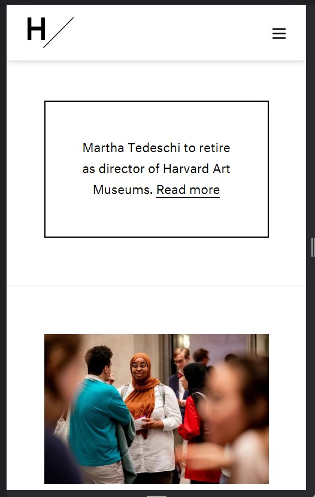
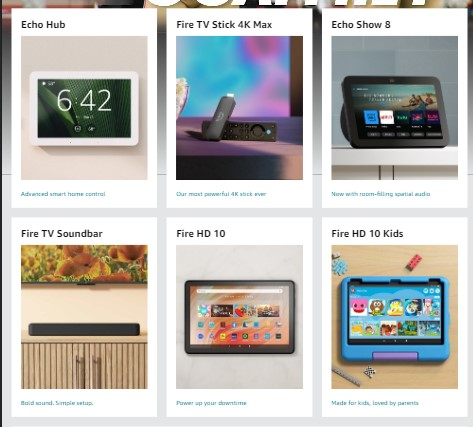
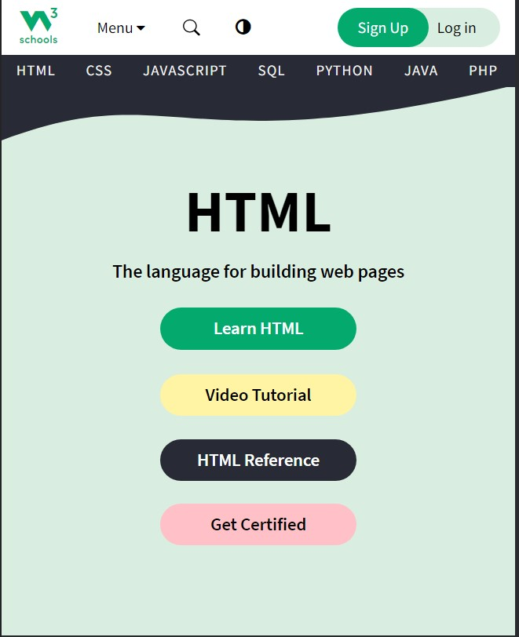

White Space and Clean Design
Harvard Art Museums
harvardartmuseums.org I like this part of the page since this is the first impression of what the webpage will look like on mobile. This principle is demonstrated by giving the quote and image their own space and it separates them into boxes.
PARC: Proximity
Amazon
amazon.com This shows a good use of proximity use. The cards are lined up both vertically and horizontally.
PARC: Contrast
W3Schools
w3schools.com I love how the green of W3Schools is still used but a different shade of it. The colors used for the buttons help them stand out.